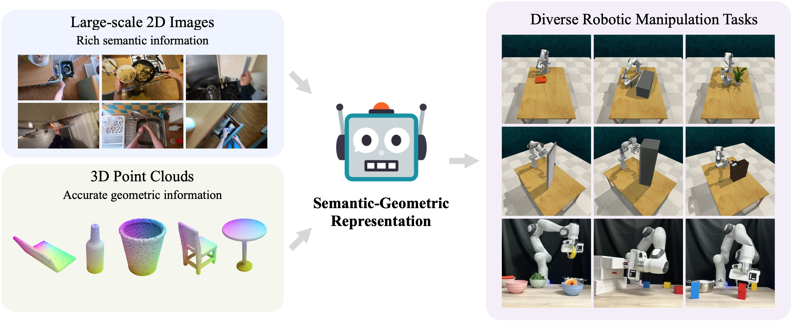

|
|
Look Before You Leap: Unveiling the Power of GPT-4V in Robotic Vision-Language Planning
Yingdong Hu*, Fanqi Lin*, Tong Zhang, Li Yi, Yang Gao
arXiv, 2023
project page /
arXiv
We introduce ViLa, a novel approach for long-horizon robotic planning that leverages GPT-4V to generate a sequence of actionable steps. ViLa empowers robots to execute complex tasks with a profound understanding of the visual world.
|

|
A Universal Semantic-Geometric Representation for Robotic Manipulation
Tong Zhang*, Yingdong Hu*, Hanchen Cui, Hang Zhao, Yang Gao
CoRL, 2023
project page /
arXiv
We present Semantic-Geometric Representation (SGR), a universal perception module for robotics that leverages the rich semantic information of large-scale pre-trained 2D models and inherits the merits of 3D spatial reasoning.
|